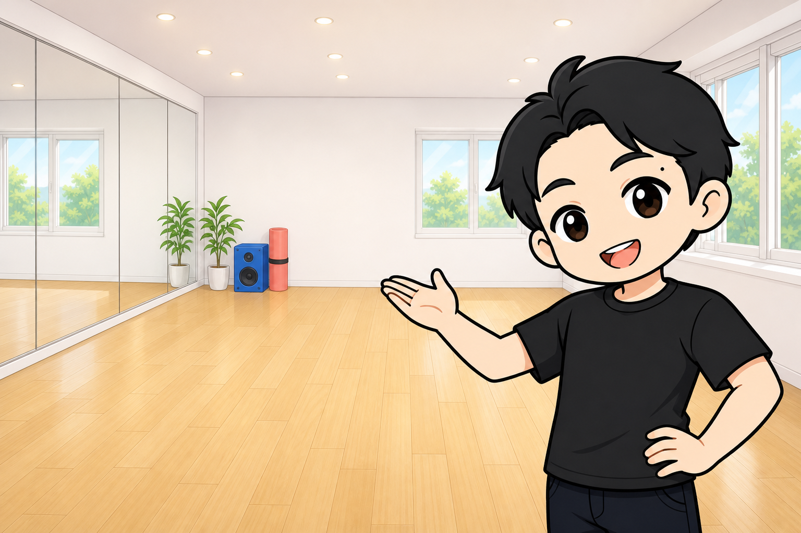
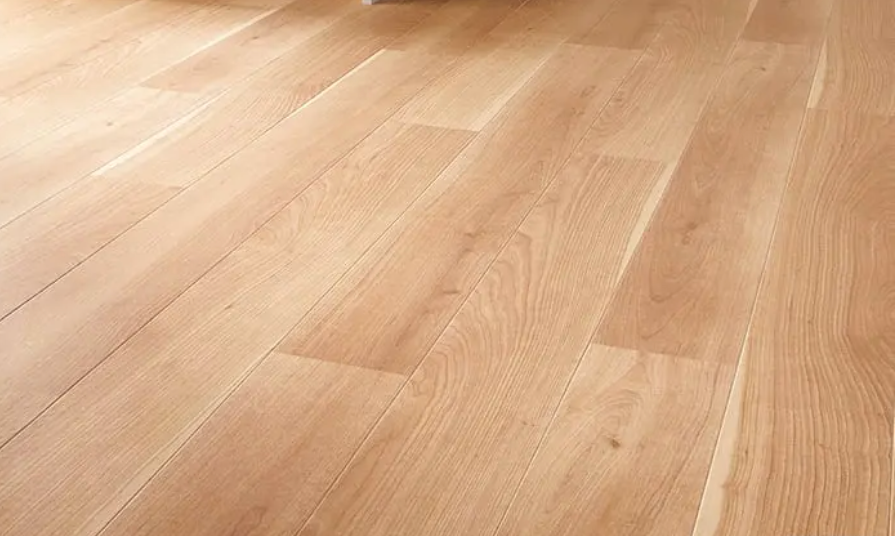
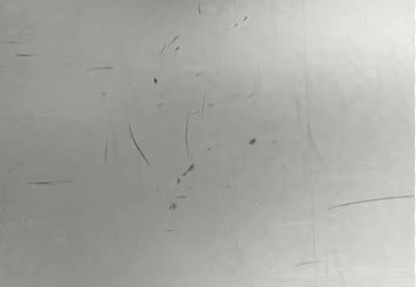
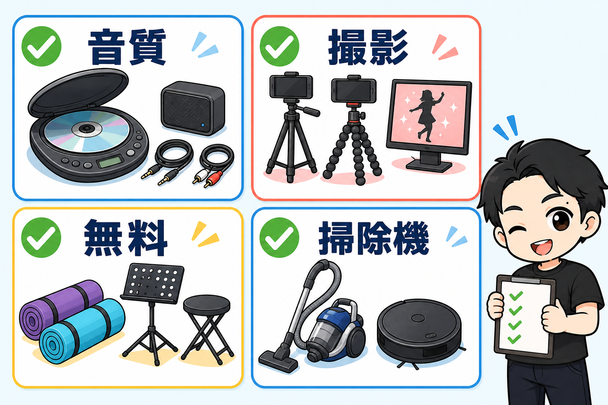
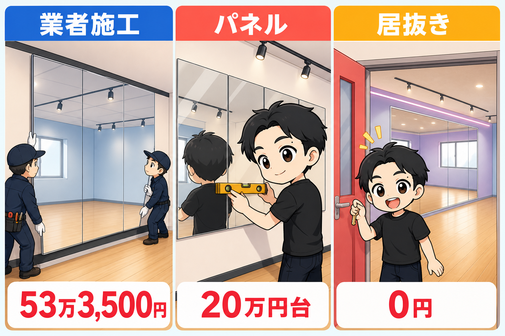

ダンススタジオを出すとき、何を買うか。
5年で23部屋出したぼくの買い物を、ぜんぶ書きます。
先に結論。
内装にはお金をかけません。鏡だけ、妥協しません。
内装は「白壁・木目調・明るい」の王道で

壁は、白いまま。いじりません。
よほど古くて汚れていない限り、そのままの壁紙でいきます。
床は、迷ったらこれです。
木目調のフローリング風クッションフロア。「店舗用」グレードを選ぶ。
↓こんなやつ

間違いないです。
厚み・硬さ・丈夫さが家庭用と違います。
しかもクッションフロアは、自分で貼れます。
ロールを買って、YouTubeを見ながらで大丈夫。
事務所仕様のタイルカーペット物件でも、上から貼れば床は解決します。
裸足で踊る人も多いので、少しクッション性がある方が疲れません。
ちなみにスタジオの床の定番、グレーのリノリウム。

これにこだわる必要、ないです。
汚れとホコリと髪の毛と、ヒールマーク(かかとの黒い跡)が目立ちます。
使いたい人向けに、敷くタイプを1本置いておけば十分です。
照明は、既存の蛍光灯のままでいい。
不具合が出たらLEDタイプへ(1機1万円くらい)。
蛍光灯の下で動画を撮るとちらつくことがあるからです。
おしゃれを狙って、わざと暗くしたりダークな内装にする人がいます。
おすすめしません。
白壁、木目調の明るい床、明るい室内。
長時間いて心地よい空間が、リピートされる空間です。
備品リスト

- CDプレーヤー(CD・Bluetooth・USB・AUXぜんぶ使えるもの。低音が効く音質のいいやつ)
- 予備のBluetoothスピーカー(AnkerやJBLの定番でOK)
- 接続ケーブル類(お客様が使えるように)
- スマホ充電ケーブル
- 延長コード
- スマホ撮影用の三脚。壊れやすいので2〜3個
- ヨガマット
- 譜面台(スマホ・iPad置きにもなって便利です)
- 大型モニター+HDMIケーブル(振付動画を流しながら練習用)
- 折りたたみテーブル、スツール(ニトリ・IKEAで十分)
- 掃除機（ロボット掃除機もあると良い）
- 空気清浄機(安いやつでOK)
- 脚立
- 強力な扇風機(工場扇タイプ。夏はエアコンだけでは足りません)
- フェイクグリーン(室内が明るくなります)
- スリッパ
- 更衣スペース（Amazonで1万円くらい）
ひとつだけ思想の話を。
ヨガマットを1回100円などの有料にしている店がありますが、ぼくは無料にしています。
というより、備品はすべて無料にしています。
100円を取るより、喜んでもらってリピートしてもらう方が、ずっと大きいので。
鏡だけは、妥協しない

主役は鏡です。
ぼくの実額は、方式でこれだけ違いました。
- 業者施工(幅6〜7m): 53万3,500円
- パネルミラー: 20万円台
- 鏡付きの居抜き物件: 0円
貼るなら、幅の許す限り目いっぱい。
一面で十分です(こだわりがあれば二面に)。
業者施工は、平らな壁にしか貼れません。
凹凸があると「壁を吹かす」(板で平らな壁を作る)工程が入ります。
そして自分でやるなら、パネルミラー一択です。
突っ張りタイプは、やめてください。
鏡は継ぎ目がズレると、間に立ったとき像が歪んで気持ち悪いんです。
突っ張りはそれが出やすい。
ぼくも一度使いましたが、直してもすぐズレて、お客様から「鏡がズレてます」と言われました。
まとめ
- 内装はいじらない。白壁・木目調CF(店舗用)・明るい室内の王道で
- 床は自分で貼れる。リノリウムにこだわらない
- 備品は定番でそろえて、ヨガマットは無料
- 鏡だけ妥協しない。DIYならパネルミラー、突っ張りはNG
目安として、備品で25万円前後。
鏡を新設するなら、プラス50万円前後です。
居抜きで鏡付き物件を引ければ、ここがゼロになります。
物件を探すとき、「鏡がある物件」があったらラッキーです。